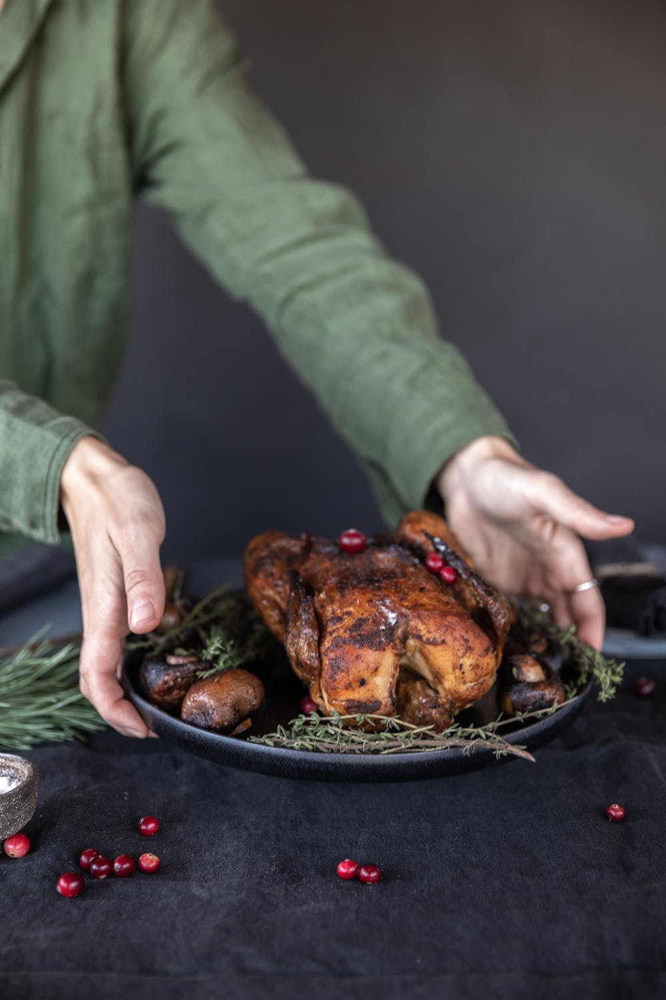
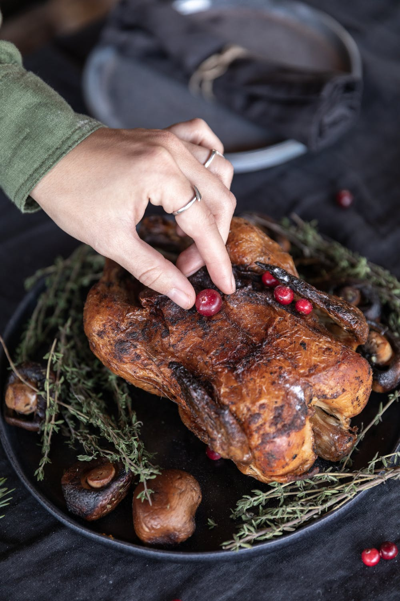
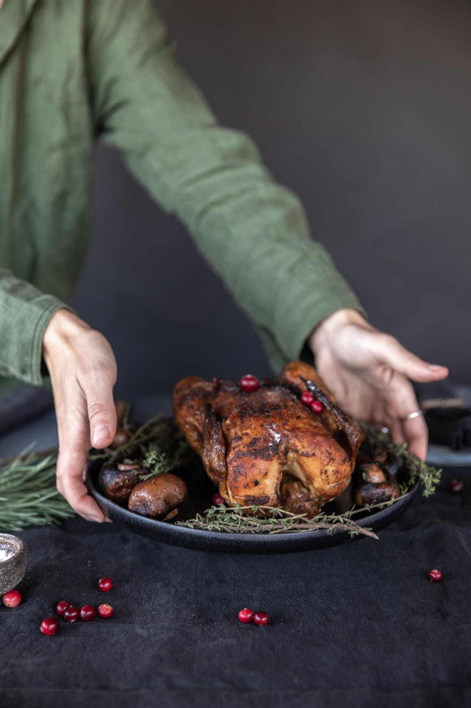
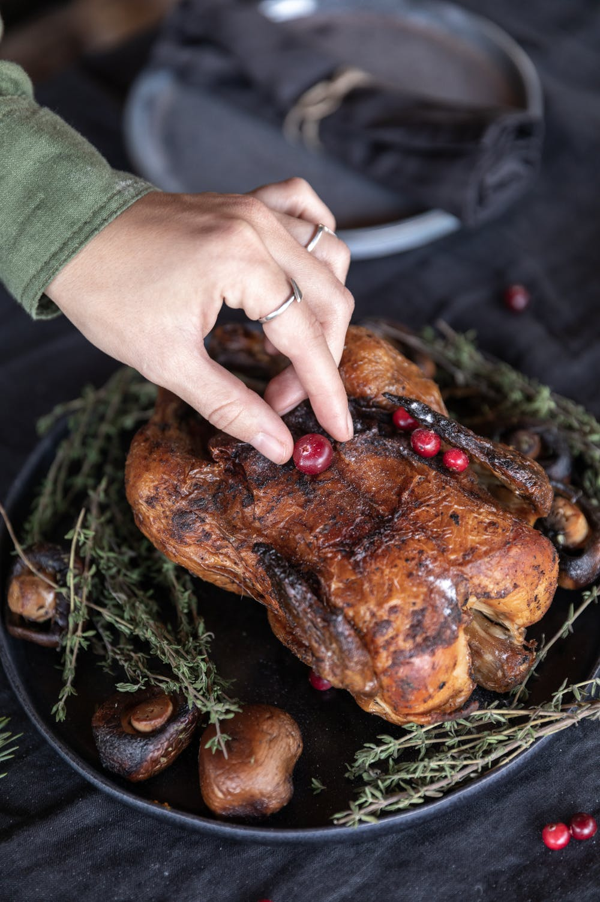

OUR MENU
Delicious From The Chef
PEAR SALAD / $11
Reid’s Orchard Pears / Bitter Greens / Granola / Big Firefly / Farms Black and Blue / Pine Nut Vinaigrette
BRODETTO DI PESCE / $9
Adriatic Seafood Soup / Clams / Prawns / Livornese / Langoustine Scallop / Celery / Olive
FARM GREENS / $9
Honey Vinaigrette / House Cheese Crouton / Fine Herbs
GRILLED KALE / $9
Bitter Greens / House Cheese Crouton / Kamon Iberico
RICOTTA GNUD / $18
Marinated Sardine / Red Currant / Chanterelles / Pine Nuts / Mantecato Vitello / Fennel / Olive / Pepitas
CANESTRELLI / $18
Reid Orchatd Pears / Bitter Greens / House Cheese Crouton / Marinated Sardine / Chanterelles / Clams


 


